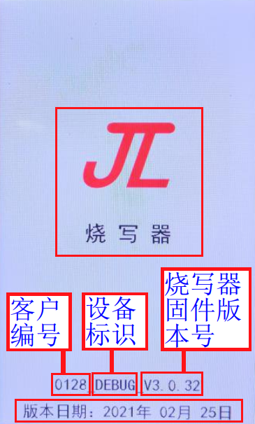

2.6. 状态指示和报错提示说明
2.6.1. LED指示灯说明
2.6.1.1. 电源指示灯
烧录器接入9V电源后，往右拨控制总电源的钮子开关，烧录器上电，电源指示灯亮起来，如电源指示灯所示。

电源指示灯
2.6.1.2. 烧录状态指示灯
烧录状态指示灯指8个烧录器通道的led状态指示灯，如烧录状态指示灯所示。

烧录状态指示灯
状态指示灯说明
编号 |
状态类型 |
红灯 |
绿灯 |
|---|---|---|---|
1 |
初始状态 |
灭 |
灭 |
2 |
正在烧录 |
灭 |
亮 |
3 |
烧录成功 |
亮 |
亮 |
4 |
烧录失败 |
亮 |
灭 |
2.6.2. LCD显示屏说明
2.6.2.1. 上电开机显示
烧录器上电开机显示界面，会显示有3S的杰理LOGO，客户编号，设备标识，烧录器固件版本号和版本发布日期，如烧录器上电开机界面所示。

烧录器上电开机界面
2.6.2.2. 正常界面显示
烧录器正常界面处于等待样机接入状态，主要显示fw文件可用烧录次数和剩余烧录次数，当前烧录器工作模式，fw文件信息和烧录器配置信息，8个烧录通道进度条信息显示部分，如烧录器正常界面显示所示。
如果使用了蓝牙地址自增、认证码烧录等功能，还会在8个烧录通道信息显示部分显示当前通道可用的蓝牙地址，认证码序号等信息。

烧录器正常界面显示
2.6.2.3. 烧录进度条显示
各个烧录通道进度条颜色和信息显示说明如下表格所示。
编号 |
当前状态 |
进度条颜色 |
信息显示 |
|---|---|---|---|
1 |
正常状态/等待烧录 |
灰色 |
Ready、当前待烧录的蓝牙地址等 |
2 |
正在烧录 |
蓝色 |
Erase、write、verify、finish |
3 |
烧录成功 |
绿色 |
Success+烧录时间等 |
4 |
通道异常/烧录失败 |
红色 |
报错提示信息 |
5 |
换板时间过短 |
黄色 |
上次烧录成功 |
2.6.3. LCD显示屏报错提示说明
烧录器在上电开机进行各模块软件初始化和样机芯片程序烧录过程中，可能会出现一些异常情况，这些异常都通过LCD显示屏显示在对应的烧录通道上。
上电开机和烧录过程中出现的部分异常，需重新给烧录器上电才能消除显示屏上的异常，其它异常一般样机芯片不在线即可消除。
以下通过表格形式列举LCD常见错误提示，以及对错误提示说明。
错误提示 |
错误提示说明 |
|---|---|
02-通信失败 |
可能为样机芯片接入烧录器USB接口存在松动、接触不良；多次重新烧录都 |
03-校验失败 |
需校验的程序与目标芯片程序或key文件不一致； |
04-KEY错误或不匹配 |
空片烧录，key烧录到目标芯片失败，key烧录不良； |
04-ufw不支持空片烧录 |
ufw 文件只能用于已经烧过key的芯片进行重烧使用（不支持烧录空片）。 |
06-版本不匹配_(目标芯片的版本) |
待烧录的FW文件程序与芯片的版本不匹配（参考：版本不匹配错误）， |
06-SDK版本错误_VX_X_X |
该报错暂时只有AD698N、AC638N型号存在， |
07-擦除失败 |
该报错一般出现在flash擦除环节，提示擦除失败，可能为芯片flash存在问题。也可能是接触不良，通信出错导致擦除失败； |
08-烧录失败 |
烧录程序时样机与USB烧录接口接触不稳定等原因导致烧录数据异常 |
09-ERR_IQ_TRIM |
该报错是芯片蓝牙测试项不过，可能芯片蓝牙性能存在问题，如果重试多次，仍报错，须进一步分析 |
10-采样异常，请重试 |
出现该报错，可以尝试重新烧录，一般提示该错误跟板子外围电容充放电等影响ADC采样导致测试出现错误，该报错一般板子和芯片都是正常的 |
11-RX(实测的电流值)(uA) |
测试芯片LNA电流，筛选芯片LNA内部晶体管受损芯片；筛选表现接收距离短，存在连接问题的芯片 |
12-样机电流异常 |
样机插入USB烧录接口后，导致USB端口电流过大； |
14-DAC测试失败 |
进行DAC模块各项电压测试用于筛选DAC参数不达标的芯片 |
15-VDDIO:(实测电压)(mV) |
芯片VDDIO引脚电压超过设定值3800mV， |
15-VDDIO错误 |
报错同15-VDDIO:(实测电压)(mV)一致 |
15-容量太小_XX_XXXXX |
待烧录的程序fw文件数据比目标芯片flash的容量要大，无法进行烧录 |
16-SFC错误 |
烧录时进行SFC模式下的程序数据校验，多次烧录不过芯片可视为不良片 |
17-频偏校准超时 |
没有开启测试盒进行测试，测试盒和烧录器“校频波频点配置”参数不一致，或者芯片频偏校不到指定范围 |
18-蓝牙地址已用完 |
设置蓝牙地址自增烧录时，所设置蓝牙地址段范围值已经全部使用完 |
蓝牙地址初始化失败 |
蓝牙地址设置有误；可能是一次性设置了过大的蓝牙地址范围（超过 u32 范围） |
19-模式错误 |
样机芯片开始烧录，校验，查空时报此此错误，为拨码开关设置的模式非烧录。 |
20-LRC校准失败 |
对无晶振方案样机，芯片LRC时钟参数校准不到指定范围内，需进一步分析 |
25-芯片未校准 |
表示该芯片出厂未经过校准， |
21-RAM测试失败 |
目标芯片ram异常为需要筛选出来的芯片 |
22-MIC测试失败 |
目标样机MIC存在异常如无声音等 |
23-不支持该LVD档位XXXX |
表示待烧芯片不支持烧录该LVD档位值。 |
25-芯片未校准 |
芯片可能出厂一些电压没有校准，此时一般需要使用一拖二烧录器使用带校准的上层板子或转接板进行校准 |
26-ERR_FMLDO_OPEN |
进入蓝牙相关FM电源测试时出现异常，进而导致USB通信出错 |
27-ERR_FMLDO_CLOSE |
进入蓝牙相关FM电源测试时出现异常，进而导致USB通信出错 |
28-获取保留区出错 |
当配置flash不整片擦除时，烧录计算需要保留的区域出现错误，可反馈给杰理工程师进一步分析 |
29-擦除FLASH出错 |
当配置flash不整片擦除时，对flash特定区域擦除时出现错误，出现该报错须进一步分析 |
30-Res文件烧录失败 |
表示自定义资源文件烧录失败，可能在烧录该部分时出现读写异常，或者USB通信异常 |
31-SFC测试通信失败 |
可能为进行SFC测试时，读异常，导致USB通信超时，出现该报错，可能flash存在异常 |
32-算法授权文件烧录失败 |
用于算法授权的相关部分数据烧录失败，报错序号含义：6:当前烧写算法数据与芯片中已有数据不同；8/9: 算法程序，运行或者 |
33-Res文件校验失败 |
表示自定义资源文件校验失败 |
34-LVD错误或不匹配 |
可能为芯片空片烧录时，LVD电压值写入芯片存储介质失败； |
34-IOVDD LEVEL错误 x |
该报错表示当前配置与芯片IOVDD档位不匹配，芯片前期应该已经被烧录过，报错数字表示IOVDD档位，0对应最低档位。提示该错误 |
35-写入频偏校准值失败 |
芯片烧录时开启频偏校准 ，校准的值写入到芯片失败，失败可以尝试重试 |
36-ERR_FLASH_CHECK |
flash擦除检查失败，如果报该错，可能芯片flash存在异常，须进一步分析。 |
37-读ID失败 |
读取目标芯片flash id失败； |
38-ERR_LNA_OPEN |
进入蓝牙LNA电流测试时出现异常，进而导致USB通信出错 |
39-ERR_LNA_CLOSE |
进入蓝牙LNA电流测试时出现异常，进而导致USB通信出错 |
40-外挂FLASH烧录失败 |
样机外挂flash烧录失败，可能为外挂flash 烧录文件io配置与实际硬件连接不一致导致，或者外挂flash烧录时电源问题引起。 |
41-外挂FLASH校验失败 |
外挂flash数据与烧录文件数据不一样 |
49-查空次数已用完 |
烧录器每次开机后，每个通道有限制查空可以使用次数为200次，查空成功次数满200后，则烧录器会会提示查空次数已用完。 |
57-授权次数已用完 |
经过授权限制烧录次数的FW文件，烧录次数已使用完，烧录器内的目标芯片程序fw文件作废 |
61-保护参数查找失败 |
isd_config.ini中配置 |
62-保护参数校验失败 |
可能为保护参数未能写入成功 |
63-保护参数测试失败 |
保护参数测试失败，保护参数无法正常使用。 |
63-保护参数测试超时 |
保护参数测试超时，保护参数无法正常使用。 |
63-保护参数测试冲突 |
保护参数与烧录配置冲突， |
64-读取FLASH BIN失败 |
提示该错误原因为ini文件中的配置问题，所生成的FW中只包含有256对齐的FLASH BIN(VM擦除最小操作单元为256字节)， 而实际 |
65-长按复位选项不匹配 |
长按复位状态与需要烧录的状态不匹配 |
66-VM地址非法 |
需要保留或擦除的VM地址非法则报错，比如该地址大于flash容量，或者该地址与程序区域重合均会报错 |
67-ERR_CYPTO |
一般串口烧录时会报该错误，可能为串口通信错误导致，一般可出现在接触不良的时候 |
68-短按复位选项不匹配 |
短按复位状态与需要烧录的状态不匹配 |
69-外挂FLASH容量太小 |
在烧录外挂flash时，外挂flash id读取失败，可以导致提示容量小，或者待烧录到外挂flash的文件资源超过了flash的容量而提示错误 |
70-LNA_BIAS失败 |
与蓝牙相关的电流测试项失败，反复重烧均提示该错误，可能需要进一步分析 |
71-二次烧录失败 |
附加的一些功能数据烧录失败 |
72-电池方案错误 |
选项需要烧录的方案类型与芯片中已有的类型不匹配报错 |
73-非Dies芯片 |
Dies芯片一般时定制类型的芯片，如果提示该错误，可能是选择定制芯片配置无法烧录到当前芯片 |
76-ic_test_timeout |
芯片测试项测试超时，可以分别取消一些PC测试项勾选，以排查具体是哪个测试项导致的超时 |
81-CHIP_LVD(xx)< FLASH_LVD(xx) |
表示芯片最低复位电压（对应烧录器【LVD电压】下拉选项）小于FLASH最低工作电压， xx表示电压值，单位为mv； |
82-频偏校准通信超时 |
校准频偏用程序发送至芯片失败，或者没有运行起来，可以尝试排查一下样机外围电路 |
82-频偏校准失败 |
频偏校准程序发送到芯片成功，但是没有校准到目标精度内，所以报错 |
83-efuse bin校验失败 |
如果是空片初次烧录提示该错误，可能为efuse烧录不良。如果是重烧，则可能是当前烧写文件与芯片已有数据无法覆盖匹配。如果确认未改变过烧 |
84-FTMAX/RAM/ROM测试失败 |
芯片测试240M时钟时，对应测试模块无法运行至该时钟频率，可能为需要筛选出来芯片 |
85-UMIB测试失败 |
蓝牙测试项失败，如果反复烧录均提示该错误，可能需要筛选出来进一步分析 |
88-update x |
提示该错误表示当前FW/UFW程序需要更新修改，或者是烧写器需升级版本。update x中x等于128，表示芯片为A, 129为B，依次类推，然后查看FW/UFW文件 |
91-FMLDO:%d(uA) |
蓝牙相关联的FM等电压模块测试失败 ，重烧提示该错误须进一步分析 |
92-LOOPBACK失败 |
烧录时进行蓝牙性能相关的参数测试，参数不达标； |
93-USB不稳定，请重试 |
USB通信出现错误，请按照提示重试即可 |
94-DACVDD电压错误 |
芯片测试项报错，可以重试是否仍提示该错误，重试多次依然报错或者使用一拖二烧录器也提示该错误，可能芯片存在该项测试异常，须进一步分析 |
95-BTPLL测试通信出错，请重试 |
测试项报错，重试或者使用其它工具也报错，须进一步分析 |
96-BTPLL异常 |
测试项报错，重试或者使用其它工具也报错，须进一步分析 |
97-UMDC异常 |
测试项报错，重试或者使用其它工具也报错，须进一步分析 |
98-DC测试失败 |
测试项报错，重试或者使用其它工具也报错，须进一步分析 |
150-不支持nandflash V1配置 |
当前版本只支持V2配置，不再支持V1配置，V1与V2差异区别在于ini文件V2多了2个参数，如果需要烧录V1参数配置的FW，则 |
REQUIRE_TARGET_FEATURE |
烧写时候检查FW中含有flash.bin文件，然后ini中的 |
接收数据超时 |
该报错通常出现在前面一部分过程能正常通信烧录，在接近最后一步时提示该错误，该问题通常是因为样机芯片外围有较多大电容或其它 |
efuse bin错误2 |
该错误表示FW文件中打包的efuse.bin文件长度超了，应该为批处理存在错误，需要修正，如果不能解决，请联系杰理SDK负责人协助处理 |
采样异常，请重试 |
进行样机电流测试时候，ADC采样异常，数据不合理； |
ADC Fail! |
ADC电流测试模块初始化异常，需检查电流测试模块供电，走线，芯片本身是否正常； |
烧录电压错误 |
如果远程升级后出现该错误，先不用理会，请部署目标芯片程序后重启烧录器看看烧录器是否工作正常，如不正常请咨询杰理技术支持 |
flash bin erro |
该报错一般出现在开机阶段，检查是否在烧录器开机初始化阶段中插入USB连接计算机，导致存储烧录文件的flash被升级占用而初始化 |
FLASH OTP填充异常 |
该错误主要是因为isd_config.ini文件中的OTP_CFG_SIZE配置大小小于描述FLASH OTP参数文件的大小，部分型号SDK配置128可能偏 |
VBAT: 实际采样值, 目标电压值 |
该报错表示样机芯片采样VBAT供电脚电压大小与目标电压差值超过设定阈值范围，具体原因及处理方法参考： |
上次烧录成功 |
该样机上次烧录成功无需重烧，详情请见换板时间设置及使用说明 |
其它报错/常见不良 |
勾选某个测试项出现对应错误：烧录器新增某个芯片型号的测试项，用于筛选性能参数不达标的芯片； |
2.6.4. VBAT 电压报错显示说明
烧录界面中 VBAT 电压显示格式为：VBAT: 实际采样值, 目标电压值 例如：VBAT: 3299, 3400mv
其中：
3299mv：样机芯片端采样到的 VBAT 引脚实际电压；
3400mv：芯片端需要达到的目标电压；
当实际采样电压与目标电压偏差超过设定阈值，例如 100mv，即判定为 VBAT 电压报错。
2.6.4.1. VBAT 电压报错常见原因
烧写器 USB_VCC 输出偏差
烧写器 USB_VCC 通过电位器调节，实际输出电压与设定值可能存在一定偏差。同一台烧写器的 8 个通道共用一个电压参考源，理想情况下各通道输出电压应一致，但受器件差异和电位器调节影响，实际偏差通常在 30mv 以内。USB 连接线及顶针接触阻抗分压
样机与烧写器之间的 USB 连接线阻抗、治具顶针与样机焊盘的接触阻抗都会产生压降。烧录时样机功耗一般为 6–7mA，若线阻与接触阻抗合计约为 10Ω，则分压约为 60mv。这也是同一台样机本次烧录失败，重新压治具后又能正常通过的主要原因。USB_GND 回路及采样误差
烧写器 USB_GND 线路中包含一个固定 1Ω 电阻，同时烧录接线及地回路交叉也会带来一定影响。样机采样本身可能存在轻微偏差，但通常可以忽略不计。
2.6.4.2. USB 供电调节配置说明
为抵消烧写器硬件输出偏差及治具接触阻抗带来的压降，可在烧写器部署界面使用 【USB供电调节（-1000~+1000）】 配置项进行补偿。
观察烧录进度条打印的 5 个电压档位，例如：
若进度条显示为：
VCC: 3320 3400, VCC: 3412 3500, VCC: 3526 3600, VCC: 3738 3800, VCC: 4134 4200 ，该样机烧录时实际采样电压整体比目标电压偏低约 70mv，
可将 5 个编辑框统一填入 70，也可按每个电压档位的差值分别填入对应编辑框。其中，第一个编辑框对应 3400mv 档位，后续依次对应更高电压档位，
第五个编辑框对应 4200mv 档位。
若进度条显示为：
VCC: 3520 3400, VCC: 3512 3500, VCC: 3626 3600, VCC: 3838 3800, VCC: 4234 4200，该样机烧录时实际采样电压整体比目标电压偏高约 20mv，
可将 5 个编辑框统一填入 -20，也可按差值分别填入。
2.6.4.3. 调节原则
实际采样电压普遍 偏低 时，可适当提高补偿值，通常增加 10–30mv；
实际采样电压普遍 偏高 时，可适当降低补偿值，通常减少 10–30mv；
电压偏低通常与 USB 线阻、顶针接触阻抗分压有关；
电压偏高通常与烧写器 USB_VCC 实际输出高于设定值有关。